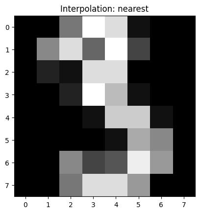
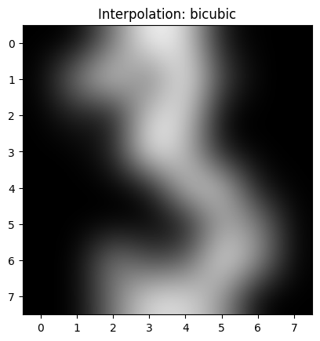
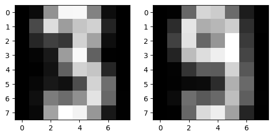
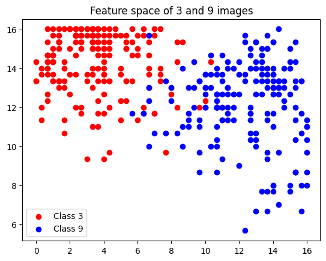
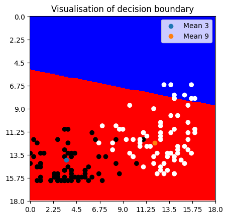

import numpy as np
import matplotlib . pyplot as plt
from sklearn . datasets import load_digits
from sklearn import model_selectiondigits = load_digits()
print ( digits.keys() )
data = digits [ "data" ]
images = digits [ "images" ]
target = digits [ "target" ]
target_names = digits [ "target_names" ]dict_keys(['data', 'target', 'frame', 'feature_names', 'target_names', 'images', 'DESCR'])
img_size = images[0].shape
print(img_size)
index_3 = np.where(target == 3)[0]
img = np.reshape(data[index_3][0], (8, 8))
assert 2 == len(img.shape)
plt.figure()
plt.gray()
plt.title('Interpolation: nearest')
plt.imshow( img , interpolation = "nearest" ) # also try interpolation =" bicubic "
plt.show()
plt.figure()
plt.gray()
plt.title('Interpolation: bicubic')
plt.imshow( img , interpolation = "bicubic" ) # also try interpolation =" bicubic "
plt.show()(8, 8)


# Get indices of pcitures of a 9
index_9 = np.where(target == 9)[0]
# Concatenate both arrays of indices and mix them
both_indices = np.concatenate((index_9, index_3))
both_indices = np.sort(both_indices)
# Only select data with indices of 3s and 9s
data_3_9 = data[both_indices]
images = images[both_indices]
target = target[both_indices]
X_all = data_3_9
y_all = target
X_train , X_test , y_train , y_test =\
model_selection.train_test_split( X_all, y_all ,
test_size = 0.4 , random_state = 0)# Visualize the mean images for 3s and 9s
data_3, data_9 = data[index_3], data[index_9]
mean_img_3, mean_img_9 = np.reshape(np.mean(data_3, axis=0), (8,8)) , np.reshape(np.mean(data_9, axis=0), (8,8))
fig, axes = plt.subplots(1, 2)
axes[0].imshow(mean_img_3, interpolation = "nearest", cmap='gray')
axes[1].imshow(mean_img_9, interpolation = "nearest", cmap='gray')
plt.show()

To classify a 9, we use the pixels (3, 2), (2, 2) and (3, 5). For a 3, we use (0, 3), (0, 4) and (3, 4). Although, we have to admit that thsoe pixels are also represented in many 9s...
def features2d(x):
f_3_2, f_3_5, f_0_3, f_0_4, f_3_4, f_2_2 = x[3, 2], x[3, 5], x[0, 3], x[0, 4], x[3, 4], x[2, 2]
feature_9 = (f_3_2 + f_3_5 + f_2_2) / 3
feature_3 = (f_0_3 + f_0_4 + f_3_4) / 3
return [feature_9, feature_3]features_3 = []
for img in data_3:
img = np.reshape(img, (8,8))
current_feature = features2d(img)
features_3.append(current_feature)
features_3 = np.array(features_3)
features_9 = []
for img in data_9:
img = np.reshape(img, (8,8))
current_feature = features2d(img)
features_9.append(current_feature)
features_9 = np.array(features_9)
plt.scatter(features_3[:, 0], features_3[:, 1], c='r', label='Class 3')
plt.scatter(features_9[:, 0], features_9[:, 1], c='b', label='Class 9')
plt.legend()
plt.title('Feature space of 3 and 9 images')
plt.show()
We have some outliers and the seperation of the two classes is not clear. However, this is good enough for now. We can see the seperation of the two classes in the feature space.
def nearest_mean(training_features, training_labels, test_features):
# Seperate training data into arrays of 3 and 9
indices_3 = np.where(training_labels == 3)[0]
indices_9 = np.where(training_labels == 9)[0]
training_features_3 = training_features[indices_3]
training_features_9 = training_features[indices_9]
# Find the mean of each feature
mean_3 = np.mean(training_features_3, axis=0)
mean_9 = np.mean(training_features_9, axis=0)
# Calculate the distance of the test_features to both means and calssify the label
labels = []
for test_feature in test_features:
distance_mean_3 = np.linalg.norm(mean_3 - test_feature)
distance_mean_9 = np.linalg.norm(mean_9 - test_feature)
if distance_mean_3 <= distance_mean_9:
label = 3
else:
label = 9
labels.append(label)
return labelsdef format_and_get_feature(data):
'formats the 1d array to a 2d matrix and gets the features of the image'
data_features = []
for img in data:
img = np.reshape(img, (8,8))
current_feature = features2d(img)
data_features.append(current_feature)
return np.array(data_features)
test_features = format_and_get_feature(X_test)
training_features = format_and_get_feature(X_train)
training_labels = y_train
test_labels = y_test
def evaluate(training_features, training_labels, test_features, test_labels):
predicted_labels = nearest_mean(training_features, training_labels, test_features)
error = 0
for index, element in enumerate(predicted_labels):
if element != test_labels[index]:
error += 1 # error contains Fp and FN
total_error = error / len(test_labels)
return round(total_error, 4)
# Get training error
error = evaluate(training_features, training_labels, training_features, training_labels)
print('training error:', error)
# Get test error
error = evaluate(training_features, training_labels, test_features, test_labels)
print('test error:', error)training error: 0.0553
test error: 0.0479
Overall, the error is quit low which indicates that the classifier is good. Intersentingly, the error for the training data is higher than the error for the test data. This might be because the size of the training data is bigger than the size of the test data. Thus, it is more probable that the training data contains more outliers than the test data.
We adjust our function nearest_mean a little bit:
def nearest_mean_adjsuted(training_features, training_labels, feature):
# Seperate training data into arrays of 3 and 9
indices_3 = np.where(training_labels == 3)[0]
indices_9 = np.where(training_labels == 9)[0]
training_features_3 = training_features[indices_3]
training_features_9 = training_features[indices_9]
# Find the mean of each feature
mean_3 = np.mean(training_features_3, axis=0)
mean_9 = np.mean(training_features_9, axis=0)
distance_mean_3 = np.linalg.norm(mean_3 - feature)
distance_mean_9 = np.linalg.norm(mean_9 - feature)
if distance_mean_3 <= distance_mean_9:
label = 1
else:
label = 0
return label, mean_3, mean_9from matplotlib.colors import ListedColormap
matrix = np.zeros((200, 200))
f_1_values = np.linspace(0, 18, 200)
f_2_values = np.linspace(0, 18, 200)
for row_index in np.arange(0, 200):
for column_index in np.arange(0, 200):
f_1 = f_1_values[row_index]
f_2 = f_2_values[column_index]
label, mean_3, mean_9 = nearest_mean_adjsuted(training_features, training_labels, np.array([f_1, f_2]))
matrix[row_index, column_index] = label
cmap = ListedColormap(['red', 'blue'])
plt.imshow(matrix, cmap=cmap, interpolation='nearest', vmin=0, vmax=1)
test_features = format_and_get_feature(X_test)
test_labels = y_test
scatter = plt.scatter([(i[0] / 18 * 200) for i in test_features],
[(i[1] / 18 * 200) for i in test_features],
c=test_labels)
mean3_scatter = plt.scatter(mean_3[0] / 18 * 200, mean_3[1] / 18 * 200, label='Mean 3')
mean9_scatter = plt.scatter(mean_9[0] / 18 * 200, mean_9[1] / 18 * 200, label='Mean 9')
plt.xticks(np.linspace(0, 200, 9), np.linspace(0, 18, 9))
plt.yticks(np.linspace(0, 200, 9), np.linspace(0, 18, 9))
plt.title('Visualisation of decision boundary')
plt.legend()
plt.show()
We have plotted the test data in the featuer space for class 3 (black) and class 9 (white). However, the decision boundary is not steep enough. The blue color maps the features to class 9 and the red color to class 3. Thus, our function for the feature calculation might not be good enough. However, we have previously calcualted the test error which was quite low. Thus, we most likely did something wrong in the process of plotting.
def fit_lds(training_features, training_labels):
assert training_labels.shape[0] == training_features.shape[0]
features_3 = []
features_9 = []
for feature_row in range(training_features.shape[0]):
if training_labels[feature_row] == 3:
features_3.append(training_features[feature_row, :])
else:
features_9.append(training_features[feature_row, :])
mu_3 = np.mean(np.array(features_3), axis=0)
mu_9 = np.mean(np.array(features_9), axis=0)
covmat = np.zeros((training_features.shape[1], training_features.shape[1]))
for i in features_3:
covmat += np.outer((i - mu_3).T, (i - mu_3))
for i in features_9:
covmat += np.outer((i - mu_9).T, (i - mu_9))
covmat /= len(training_labels)
N = len(features_3)
p3 = np.sum(training_labels == 3) / N
p9 = np.sum(training_labels == 9) / N
p = np.array([p3, p9])
mu = np.vstack((mu_3, mu_9))
return mu, covmat, pparams = fit_lds(X_train, y_train)
print(f'mu {params[0]}, \ncovmat {params[1]}, \np {params[2]}')mu [[0.00000000e+00 6.66666667e-01 8.39639640e+00 1.41531532e+01
1.39009009e+01 7.10810811e+00 8.10810811e-01 9.00900901e-03
0.00000000e+00 3.76576577e+00 1.22162162e+01 9.07207207e+00
1.14504505e+01 1.15675676e+01 2.10810811e+00 9.00900901e-03
0.00000000e+00 1.60360360e+00 3.50450450e+00 3.45045045e+00
1.17027027e+01 9.00000000e+00 9.00900901e-01 0.00000000e+00
0.00000000e+00 1.44144144e-01 1.45045045e+00 8.70270270e+00
1.39009009e+01 5.58558559e+00 6.30630631e-02 0.00000000e+00
0.00000000e+00 5.40540541e-02 1.36036036e+00 5.95495495e+00
1.20450450e+01 1.10630631e+01 1.98198198e+00 0.00000000e+00
0.00000000e+00 5.67567568e-01 1.59459459e+00 1.20720721e+00
4.77477477e+00 1.20810811e+01 5.99099099e+00 0.00000000e+00
0.00000000e+00 9.18918919e-01 7.27927928e+00 6.22522523e+00
8.49549550e+00 1.32162162e+01 5.52252252e+00 9.00900901e-03
0.00000000e+00 5.13513514e-01 9.21621622e+00 1.46936937e+01
1.36846847e+01 8.30630631e+00 1.00900901e+00 9.00900901e-03]
[0.00000000e+00 1.22641509e-01 5.86792453e+00 1.21886792e+01
1.16037736e+01 5.70754717e+00 1.38679245e+00 2.83018868e-02
0.00000000e+00 2.59433962e+00 1.29528302e+01 9.50000000e+00
1.00943396e+01 1.15943396e+01 2.31132075e+00 7.54716981e-02
0.00000000e+00 3.60377358e+00 1.23867925e+01 5.91509434e+00
8.48113208e+00 1.43962264e+01 3.06603774e+00 5.66037736e-02
0.00000000e+00 1.87735849e+00 9.99056604e+00 1.19150943e+01
1.31037736e+01 1.39528302e+01 4.02830189e+00 0.00000000e+00
0.00000000e+00 1.41509434e-01 2.73584906e+00 5.29245283e+00
5.24528302e+00 1.17641509e+01 5.01886792e+00 0.00000000e+00
0.00000000e+00 1.69811321e-01 5.00000000e-01 5.37735849e-01
2.09433962e+00 1.03113208e+01 5.98113208e+00 0.00000000e+00
0.00000000e+00 5.37735849e-01 5.85849057e+00 4.66981132e+00
5.61320755e+00 1.08018868e+01 5.50000000e+00 8.49056604e-02
0.00000000e+00 6.60377358e-02 6.03773585e+00 1.22169811e+01
1.33773585e+01 9.26415094e+00 2.29245283e+00 6.60377358e-02]],
covmat [[ 0.00000000e+00 0.00000000e+00 0.00000000e+00 ... 0.00000000e+00
0.00000000e+00 0.00000000e+00]
[ 0.00000000e+00 6.63927774e-01 1.44416428e+00 ... -4.75118106e-01
-1.86491030e-01 -7.02837434e-03]
[ 0.00000000e+00 1.44416428e+00 1.33581083e+01 ... -1.58884500e+00
-1.04747492e+00 -6.20823414e-02]
...
[ 0.00000000e+00 -4.75118106e-01 -1.58884500e+00 ... 2.48211491e+01
8.32490790e+00 1.74399249e-01]
[ 0.00000000e+00 -1.86491030e-01 -1.04747492e+00 ... 8.32490790e+00
8.97200439e+00 4.19095950e-01]
[ 0.00000000e+00 -7.02837434e-03 -6.20823414e-02 ... 1.74399249e-01
4.19095950e-01 6.23443633e-02]],
p [1. 0.95495495]
def predict_lda(mu, covmat, p, test_features):
N = mu.shape[1]
covmat_inverse = np.linalg.inv(covmat)
mu_diff = mu[1] - mu[0]
beta = np.dot(covmat_inverse, mu_diff.T)
b = -0.5 * (mu[1] - mu[0]) * beta + np.log(N[1] / N[0])
test_labels = []
for i in range(len(test_features.shape[0])):
if i * beta + b > 0:
test_labels.append(3) # check if the classes are right
else:
test_labels.append(9)# Training data
predict_lda(*params, test_features=y_train)
# Test data
predict_lda(*params, test_features=y_test)---------------------------------------------------------------------------
LinAlgError Traceback (most recent call last)
<ipython-input-66-c213a3d78fa9> in <cell line: 2>()
1 # Training data
----> 2 predict_lda(*params, test_features=y_train)
3
4 # Test data
5 predict_lda(*params, test_features=y_test)
<ipython-input-65-e298701dba1e> in predict_lda(mu, covmat, p, test_features)
1 def predict_lda(mu, covmat, p, test_features):
2 N = mu.shape[1]
----> 3 covmat_inverse = np.linalg.inv(covmat)
4 mu_diff = mu[1] - mu[0]
5 beta = np.dot(covmat_inverse, mu_diff.T)
/usr/local/lib/python3.10/dist-packages/numpy/linalg/linalg.py in inv(a)
559 signature = 'D->D' if isComplexType(t) else 'd->d'
560 extobj = get_linalg_error_extobj(_raise_linalgerror_singular)
--> 561 ainv = _umath_linalg.inv(a, signature=signature, extobj=extobj)
562 return wrap(ainv.astype(result_t, copy=False))
563
/usr/local/lib/python3.10/dist-packages/numpy/linalg/linalg.py in _raise_linalgerror_singular(err, flag)
110
111 def _raise_linalgerror_singular(err, flag):
--> 112 raise LinAlgError("Singular matrix")
113
114 def _raise_linalgerror_nonposdef(err, flag):
LinAlgError: Singular matrix
def partial_derivative_loss_beta(beta, b, X, y, lamda):
N = len(y)
partial_sum = np.zeros_like(beta)
for i in range(N):
if y[i] * (np.dot(X[i], beta) + b) < 1:
partial_sum += -y[i] * X[i]
return beta + (lamda / N) * partial_sum
def partial_derivative_loss_b(beta, b, X, y, lamda):
N = len(y)
partial_sum = np.zeros_like(beta)
for i in range(N):
if y[i] * (np.dot(X[i], beta) + b) < 1:
partial_sum += -y[i]
return (lamda / N) * partial_sum
def loss_function(beta, b, X, y, lambda_):
N = len(y)
beta = beta.reshape(-1, 1)
hinge_loss = np.maximum(0, 1 - y * (X.dot(beta) + b))
return 0.5 * np.dot(beta, beta) + lambda_ / N * np.sum(hinge_loss)
def plot_loss(loss_list):
plt.plot(np.linspace(0, len(loss_list)), loss_list)
plt.xlabel('Iterations')
plt.ylabel('loss')
plt.show()def fit_svm(training_features, training_labels, lambda_, learning_rate, max_steps, tolerance):
# Initialize parameters
beta = np.random.normal(size=training_features.shape[1])
b = 0
N = training_features.shape[0]
loss = 0
loss_list = []
# Gradient descent optimization
for step in range(max_steps):
# Compute gradients
d_beta = partial_derivative_loss_beta(beta, b, training_features, training_labels, lambda_)
d_b = partial_derivative_loss_b(beta, b, training_features, training_labels, lambda_)
# Update parameters
beta -= learning_rate * d_beta
b -= learning_rate * d_b
# Calculate loss
loss += loss_function(beta, b, training_features, training_labels, lambda_)
loss_list.append(loss)
# training rate scheduler
if len(loss_list) > 10 and abs(loss_list[-1] - loss_list[-2]) > tolerance:
learning_rate /= 10
return beta, b, loss_listtolerance = 0.05
max_steps = 100
learning_rate = 0.1
lambda_ = 0.3
training_features = format_and_get_feature(X_train)
beta, b, loss_list = fit_svm(training_features, training_labels, lambda_, learning_rate, max_steps, tolerance)
plot_loss(loss_list)---------------------------------------------------------------------------
ValueError Traceback (most recent call last)
<ipython-input-67-72a34d17ee48> in <cell line: 7>()
5 training_features = format_and_get_feature(X_train)
6
----> 7 beta, b, loss_list = fit_svm(training_features, training_labels, lambda_, learning_rate, max_steps, tolerance)
8 plot_loss(loss_list)
<ipython-input-51-3c7d6dcaf52a> in fit_svm(training_features, training_labels, lambda_, learning_rate, max_steps, tolerance)
20
21 # Calculate loss
---> 22 loss += loss_function(beta, b, training_features, training_labels, lambda_)
23 loss_list.append(loss)
24
<ipython-input-61-20d58c9b0f6e> in loss_function(beta, b, X, y, lambda_)
20 N = len(y)
21 beta = beta.reshape(-1, 1)
---> 22 hinge_loss = np.maximum(0, 1 - y * (X.dot(beta) + b))
23 return 0.5 * np.dot(beta, beta) + lambda_ / N * np.sum(hinge_loss)
24
ValueError: operands could not be broadcast together with shapes (217,) (217,2)
def predict_svm(X, beta, b):
predictions = np.sign(np.dot(X, beta) + b)
return predictions# plot loss
plot_loss(loss_list)# Visualize decision boundary
def boundary(x, beta, b):
return x*beta + b
test_features = format_and_get_feature(X_test)
test_labels = y_test
x = np.linspace(0,18)
plt.plot(x, boundary(x, beta, b))
plt.title('SVM decision boundary in feature space')
plt.scatter([i[0] for i in test_features],
[i[1] for i in test_features],
c=test_labels)# Cross validation
lambda_guesses = [0, 0.1, 0.5, 0.8, 1, 2, 3]
results = []
for lambda_ in lambda_guesses:
params = fit_svm(training_features, training_features, lambda_, learning_rate, max_steps, tolerance)
results.append(params)
last_losses = [i[2][-1] for i in results]
lowest_loss = min(last_losses)
index = last_losses.index(lowest_loss)
best_lambda = lambda_guesses[index]
best_beta = results[index][0]
best_b = results[index][1]
print(f'lambda {best_lambda}, beta {best_beta}, b{best_b}')# sklearn
from sklearn.svm import SVC
from sklearn.metrics import accuracy_score
svm_model = SVC(kernel='linear', C=1.0, random_state=42)
svm_model.fit(training_features, training_labels)
y_pred = svm_model.predict(test_features)
accuracy = accuracy_score(test_labels, y_pred)
print("Accuracy:", accuracy)Accuracy: 0.9657534246575342
We got a pretty high accuracy. This algorithm performed better than ours did.